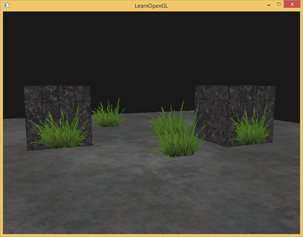

混合
| 原文 | Blending |
|---|---|
| 作者 | JoeyDeVries |
| 翻译 | Krasjet, Django |
| 校对 | 暂无校对 |
OpenGL中，

透明的物体可以是完全透明的（让所有的颜色穿过），或者是半透明的（它让颜色通过，同时也会显示自身的颜色）。一个物体的透明度是通过它颜色的
我们目前一直使用的纹理有三个颜色分量：红、绿、蓝。但一些材质会有一个内嵌的alpha通道，对每个纹素(Texel)都包含了一个
{kind=link}

我们很快就会将这个窗户纹理添加到场景中，但是首先我们需要讨论一个更简单的技术，来实现只有完全透明和完全不透明的纹理的透明度。
丢弃片段
有些图片并不需要半透明，只需要根据纹理颜色值，显示一部分，或者不显示一部分，没有中间情况。比如说草，如果想不太费劲地创建草这种东西，你需要将一个草的纹理贴在一个2D四边形(Quad)上，然后将这个四边形放到场景中。然而，草的形状和2D四边形的形状并不完全相同，所以你只想显示草纹理的某些部分，而忽略剩下的部分。
下面这个纹理正是这样的，它要么是完全不透明的（alpha值为1.0），要么是完全透明的（alpha值为0.0），没有中间情况。你可以看到，只要不是草的部分，这个图片显示的都是网站的背景颜色而不是它本身的颜色。

所以当添加像草这样的植被到场景中时，我们不希望看到草的方形图像，而是只显示草的部分，并能看透图像其余的部分。我们想要
在此之前，我们还要学习如何加载一个透明的纹理。要想加载有alpha值的纹理，我们并不需要改很多东西，stb_image在纹理有alpha通道的时候会自动加载，但我们仍要在纹理生成过程中告诉OpenGL，我们的纹理现在使用alpha通道了：
glTexImage2D(GL_TEXTURE_2D, 0, GL_RGBA, width, height, 0, GL_RGBA, GL_UNSIGNED_BYTE, data);
同样，保证你在片段着色器中获取了纹理的全部4个颜色分量，而不仅仅是RGB分量：
void main()
{
// FragColor = vec4(vec3(texture(texture1, TexCoords)), 1.0);
FragColor = texture(texture1, TexCoords);
}
既然我们已经知道该如何加载透明的纹理了，是时候将它带入实战了，我们将会在深度测试小节的场景中加入几棵草。
我们会创建一个vector，向里面添加几个glm::vec3变量来代表草的位置：
vector<glm::vec3> vegetation;
vegetation.push_back(glm::vec3(-1.5f, 0.0f, -0.48f));
vegetation.push_back(glm::vec3( 1.5f, 0.0f, 0.51f));
vegetation.push_back(glm::vec3( 0.0f, 0.0f, 0.7f));
vegetation.push_back(glm::vec3(-0.3f, 0.0f, -2.3f));
vegetation.push_back(glm::vec3( 0.5f, 0.0f, -0.6f));
每个草都被渲染到了一个四边形上，贴上草的纹理。这并不能完美地表示3D的草，但这比加载复杂的模型要快多了。使用一些小技巧，比如在同一个位置加入一些旋转后的草四边形，你仍然能获得比较好的结果的。
因为草的纹理是添加到四边形对象上的，我们还需要创建另外一个VAO，填充VBO，设置正确的顶点属性指针。接下来，在绘制完地板和两个立方体后，我们将会绘制草：
glBindVertexArray(vegetationVAO);
glBindTexture(GL_TEXTURE_2D, grassTexture);
for(unsigned int i = 0; i < vegetation.size(); i++)
{
model = glm::mat4(1.0f);
model = glm::translate(model, vegetation[i]);
shader.setMat4("model", model);
glDrawArrays(GL_TRIANGLES, 0, 6);
}
运行程序你将看到：

出现这种情况是因为OpenGL默认是不知道怎么处理alpha值的，更不知道什么时候应该丢弃片段。我们需要自己手动来弄。幸运的是，有了着色器，这还是非常容易的。GLSL给了我们discard命令，一旦被调用，它就会保证片段不会被进一步处理，所以就不会进入颜色缓冲。有了这个指令，我们就能够在片段着色器中检测一个片段的alpha值是否低于某个阈值，如果是的话，则丢弃这个片段，就好像它不存在一样：
#version 330 core
out vec4 FragColor;
in vec2 TexCoords;
uniform sampler2D texture1;
void main()
{
vec4 texColor = texture(texture1, TexCoords);
if(texColor.a < 0.1)
discard;
FragColor = texColor;
}
这里，我们检测被采样的纹理颜色的alpha值是否低于0.1的阈值，如果是的话，则丢弃这个片段。片段着色器保证了它只会渲染不是（几乎）完全透明的片段。现在它看起来就正常了：

Important
注意，当采样纹理的边缘的时候，OpenGL会对边缘的值和纹理下一个重复的值进行插值（因为我们将它的环绕方式设置为了GL_REPEAT。这通常是没问题的，但是由于我们使用了透明值，纹理图像的顶部将会与底部边缘的纯色值进行插值。这样的结果是一个半透明的有色边框，你可能会看见它环绕着你的纹理四边形。要想避免这个，每当你alpha纹理的时候，请将纹理的环绕方式设置为GL_CLAMP_TO_EDGE：
glTexParameteri( GL_TEXTURE_2D, GL_TEXTURE_WRAP_S, GL_CLAMP_TO_EDGE);
glTexParameteri( GL_TEXTURE_2D, GL_TEXTURE_WRAP_T, GL_CLAMP_TO_EDGE);
你可以在这里找到源码。
混合
虽然直接丢弃片段很好，但它不能让我们渲染半透明的图像。我们要么渲染一个片段，要么完全丢弃它。要想渲染有多个透明度级别的图像，我们需要启用
glEnable(GL_BLEND);
启用了混合之后，我们需要告诉OpenGL它该如何混合。
OpenGL中的混合是通过下面这个方程来实现的：
- ：源颜色向量。这是源自纹理的颜色向量。
- ：目标颜色向量。这是当前储存在颜色缓冲中的颜色向量。
- ：源因子值。指定了alpha值对源颜色的影响。
- ：目标因子值。指定了alpha值对目标颜色的影响。
片段着色器运行完成后，并且所有的测试都通过之后，这个

我们有两个方形，我们希望将这个半透明的绿色方形绘制在红色方形之上。红色的方形将会是目标颜色（所以它应该先在颜色缓冲中），我们将要在这个红色方形之上绘制这个绿色方形。
问题来了：我们将因子值设置为什么？嘛，我们至少想让绿色方形乘以它的alpha值，所以我们想要将设置为源颜色向量的alpha值，也就是0.6。接下来就应该清楚了，目标方形的贡献应该为剩下的alpha值。如果绿色方形对最终颜色贡献了60%，那么红色方块应该对最终颜色贡献了40%，即1.0 - 0.6。所以我们将设置为1减去源颜色向量的alpha值。这个方程变成了：
结果就是重叠方形的片段包含了一个60%绿色，40%红色的一种脏兮兮的颜色：

最终的颜色将会被储存到颜色缓冲中，替代之前的颜色。
这样子很不错，但我们该如何让OpenGL使用这样的因子呢？正好有一个专门的函数，叫做
| 选项 | 值 |
|---|---|
GL_ZERO |
因子等于 |
GL_ONE |
因子等于 |
GL_SRC_COLOR |
因子等于源颜色向量 |
GL_ONE_MINUS_SRC_COLOR |
因子等于 |
GL_DST_COLOR |
因子等于目标颜色向量 |
GL_ONE_MINUS_DST_COLOR |
因子等于 |
GL_SRC_ALPHA |
因子等于的分量 |
GL_ONE_MINUS_SRC_ALPHA |
因子等于 的分量 |
GL_DST_ALPHA |
因子等于的分量 |
GL_ONE_MINUS_DST_ALPHA |
因子等于 的分量 |
GL_CONSTANT_COLOR |
因子等于常数颜色向量 |
GL_ONE_MINUS_CONSTANT_COLOR |
因子等于 |
GL_CONSTANT_ALPHA |
因子等于的分量 |
GL_ONE_MINUS_CONSTANT_ALPHA |
因子等于 的分量 |
为了获得之前两个方形的混合结果，我们需要使用源颜色向量的作为源因子，使用作为目标因子。这将会产生以下的
glBlendFunc(GL_SRC_ALPHA, GL_ONE_MINUS_SRC_ALPHA);
也可以使用
glBlendFuncSeparate(GL_SRC_ALPHA, GL_ONE_MINUS_SRC_ALPHA, GL_ONE, GL_ZERO);
这个函数和我们之前设置的那样设置了RGB分量，但这样只能让最终的alpha分量被源颜色向量的alpha值所影响到。
OpenGL甚至给了我们更多的灵活性，允许我们改变方程中源和目标部分的运算符。当前源和目标是相加的，但如果愿意的话，我们也可以让它们相减。
- GL_FUNC_ADD：默认选项，将两个分量相加：。
- GL_FUNC_SUBTRACT：将两个分量相减： 。
- GL_FUNC_REVERSE_SUBTRACT：将两个分量相减，但顺序相反：。
- GL_MIN：取两个分量中的最小值：。
- GL_MAX：取两个分量中的最大值：。
通常我们都可以省略调用
渲染半透明纹理
既然我们已经知道OpenGL是如何处理混合的了，是时候将我们的知识运用到实战中了，我们将会在场景中添加几个半透明的窗户。我们将使用本节开始的那个场景，但是这次不再是渲染草的纹理了，我们现在将使用本节开始时的那个透明的窗户纹理。
首先，在初始化时我们启用混合，并设定相应的混合函数：
glEnable(GL_BLEND);
glBlendFunc(GL_SRC_ALPHA, GL_ONE_MINUS_SRC_ALPHA);
由于启用了混合，我们就不需要丢弃片段了，所以我们把片段着色器还原：
#version 330 core
out vec4 FragColor;
in vec2 TexCoords;
uniform sampler2D texture1;
void main()
{
FragColor = texture(texture1, TexCoords);
}
现在（每当OpenGL渲染了一个片段时）它都会将当前片段的颜色和当前颜色缓冲中的片段颜色根据alpha值来进行混合。由于窗户纹理的玻璃部分是半透明的，我们应该能通窗户中看到背后的场景了。

如果你仔细看的话，你可能会注意到有些不对劲。最前面窗户的透明部分遮蔽了背后的窗户？这为什么会发生呢？
发生这一现象的原因是，深度测试和混合一起使用的话会产生一些麻烦。当写入深度缓冲时，深度缓冲不会检查片段是否是透明的，所以透明的部分会和其它值一样写入到深度缓冲中。结果就是窗户的整个四边形不论透明度都会进行深度测试。即使透明的部分应该显示背后的窗户，深度测试仍然丢弃了它们。
所以我们不能随意地决定如何渲染窗户，让深度缓冲解决所有的问题了。这也是混合变得有些麻烦的部分。要想保证窗户中能够显示它们背后的窗户，我们需要首先绘制背后的这部分窗户。这也就是说在绘制的时候，我们必须先手动将窗户按照最远到最近来排序，再按照顺序渲染。
Important
注意，对于草这种全透明的物体，我们可以选择丢弃透明的片段而不是混合它们，这样就解决了这些头疼的问题（没有深度问题）。
不要打乱顺序
要想让混合在多个物体上工作，我们需要最先绘制最远的物体，最后绘制最近的物体。普通不需要混合的物体仍然可以使用深度缓冲正常绘制，所以它们不需要排序。但我们仍要保证它们在绘制（排序的）透明物体之前已经绘制完毕了。当绘制一个有不透明和透明物体的场景的时候，大体的原则如下：
- 先绘制所有不透明的物体。
- 对所有透明的物体排序。
- 按顺序绘制所有透明的物体。
排序透明物体的一种方法是，从观察者视角获取物体的距离。这可以通过计算摄像机位置向量和物体的位置向量之间的距离所获得。接下来我们把距离和它对应的位置向量存储到一个STL库的
std::map<float, glm::vec3> sorted;
for (unsigned int i = 0; i < windows.size(); i++)
{
float distance = glm::length(camera.Position - windows[i]);
sorted[distance] = windows[i];
}
结果就是一个排序后的容器对象，它根据distance键值从低到高储存了每个窗户的位置。
之后，这次在渲染的时候，我们将以逆序（从远到近）从map中获取值，之后以正确的顺序绘制对应的窗户：
for(std::map<float,glm::vec3>::reverse_iterator it = sorted.rbegin(); it != sorted.rend(); ++it)
{
model = glm::mat4();
model = glm::translate(model, it->second);
shader.setMat4("model", model);
glDrawArrays(GL_TRIANGLES, 0, 6);
}
我们使用了

你可以在这里找到带有排序的完整源代码。
虽然按照距离排序物体这种方法对我们这个场景能够正常工作，但它并没有考虑旋转、缩放或者其它的变换，奇怪形状的物体需要一个不同的计量，而不是仅仅一个位置向量。
在场景中排序物体是一个很困难的技术，很大程度上由你场景的类型所决定，更别说它额外需要消耗的处理能力了。完整渲染一个包含不透明和透明物体的场景并不是那么容易。更高级的技术还有